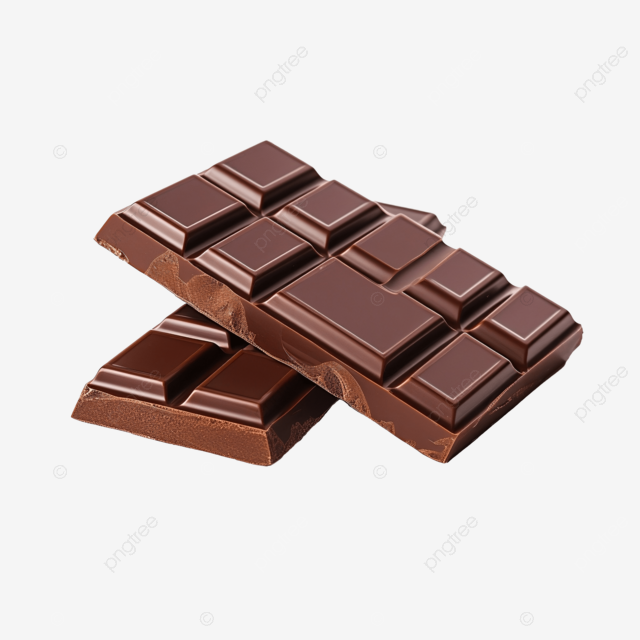

W tym miejscu znajduje się treść strony
Czekolada – wyrób cukierniczy sporządzany z miazgi kakaowej,Czekolada – wyrób cukierniczy sporządzany z miazgi kakaowej,
Czekolada – wyrób cukierniczy sporządzany z miazgi kakaowej,
 tłuszczu kakaowego (masło kakaowe) lub innego tłuszczu roślinnego,
tłuszczu kakaowego (masło kakaowe) lub innego tłuszczu roślinnego,
tłuszczu kakaowego (masło kakaowe) lub innego tłuszczu roślinnego,
 środka słodzącego i innych dodatków, a w przypadku czekolady mlecznej także z mleka.
środka słodzącego i innych dodatków, a w przypadku czekolady mlecznej także z mleka.środka słodzącego i innych dodatków, a w przypadku czekolady mlecznej także z mleka.
środka słodzącego i innych dodatków, a w przypadku czekolady mlecznej także z mleka.
 Według dyrektywy 2000/36/WE czekoladę definiuje się jako wyrób otrzymywany z wyrobów kakaowych i cukrów,
Według dyrektywy 2000/36/WE czekoladę definiuje się jako wyrób otrzymywany z wyrobów kakaowych i cukrów,który zawiera nie mniej niż 35% suchej masy kakaowej ogółem,
Według dyrektywy 2000/36/WE czekoladę definiuje się jako wyrób otrzymywany z wyrobów kakaowych i cukrów,
który zawiera nie mniej niż 35% suchej masy kakaowej ogółem,
Według dyrektywy 2000/36/WE czekoladę definiuje się jako wyrób otrzymywany z wyrobów kakaowych i cukrów,
który zawiera nie mniej niż 35% suchej masy kakaowej ogółem,
 w tym nie mniej niż 14% suchej odtłuszczonej masy kakaowej
w tym nie mniej niż 14% suchej odtłuszczonej masy kakaowejw tym nie mniej niż 14% suchej odtłuszczonej masy kakaowej
w tym nie mniej niż 14% suchej odtłuszczonej masy kakaowej
 W celu uzyskania miazgi kakaowej i tłuszczu kakaowego, ziarna kakaowca poddaje się fermentacji, suszy i rozciera.
W celu uzyskania miazgi kakaowej i tłuszczu kakaowego, ziarna kakaowca poddaje się fermentacji, suszy i rozciera.Kolejnym etapem produkcji jest konszowanie.
Światowy Dzień Gorzkiej Czekolady (Goryczki) obchodzony jest 7 lipca. W Polsce świętowany jest Dzień Czekolady wypadający 12 kwietnia.
VIDEO
AUDIO
© N.J., October 2024